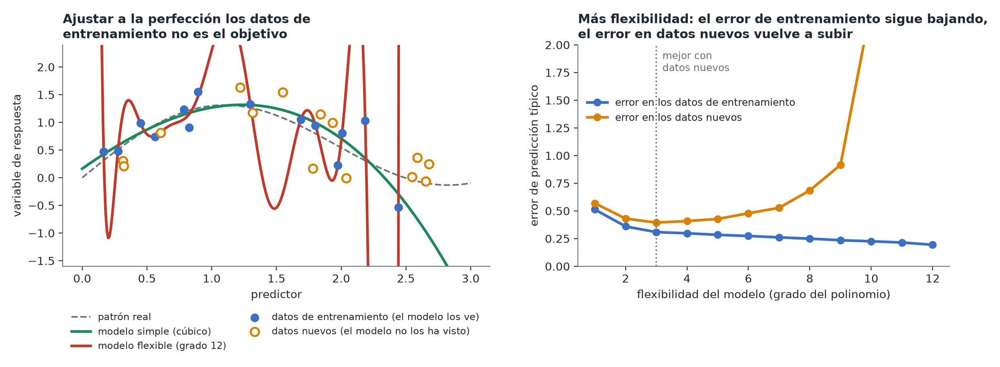

Sobreajuste y regularización
En pocas palabras: un modelo que se ajusta perfectamente a tus datos concretos suele ser peor en su verdadera función que uno que se ajusta con algo más de holgura, porque ha memorizado el ruido y no solo el patrón.
Una imagen sencilla
Imagina a Mia ajustando a sus 300 pacientes un modelo con cientos de variantes genéticas como predictores, lo bastante flexible como para reproducir exactamente el colesterol LDL de cada paciente, frente a un modelo simple con un puñado de predictores que se acerca bastante en la mayoría. El modelo flexible tiene error cero en estos datos, pero si le pides que prediga el LDL de un paciente nuevo, que no ha visto, probablemente lo hará bastante peor que el simple. Aprendió las rarezas concretas (incluido el ruido de medición) de estos 300 pacientes, no la relación general entre genotipo, edad y LDL. Eso es el sobreajuste (overfitting). (Este es el escenario real de las puntuaciones poligénicas (polygenic scores): un único número de riesgo construido sumando los pequeños efectos de muchas variantes, que solo predice bien en pacientes nuevos si se evitó que el modelo se sobreajustara.)

Por qué más predictores empeora el problema
Cuantos más predictores metes en un modelo (sobre todo en relación con la cantidad de datos de que dispones), más fácil resulta ajustar los datos de entrenamiento casi a la perfección aprovechando patrones casuales que no se repetirán en datos nuevos. Es un riesgo particular en los conjuntos de datos de las ciencias de la vida, con muchos predictores candidatos (genes, biomarcadores, variables ambientales) y comparativamente pocas muestras.
Regularización: la solución estándar
La regularización encoge deliberadamente los coeficientes del modelo hacia cero (o exactamente a cero, en el caso de los menos importantes), sacrificando un poco de ajuste a los datos actuales a cambio de un modelo que generaliza mejor a datos nuevos. Hay tres variantes habituales:
- Ridge: encoge todos los coeficientes en cierta medida; funciona bien cuando muchos predictores aportan cada uno un poco.
- Lasso: puede encoger algunos coeficientes hasta dejarlos exactamente en cero, de modo que selecciona en la práctica un conjunto más pequeño de predictores "importantes".
- Elastic Net: una mezcla de ambos.
Cuánto encoger se elige, a su vez, comprobando el rendimiento con datos reservados (véase Validación cruzada), no a ojo.
Una nota práctica
La regularización actúa sobre el tamaño de los coeficientes, por lo que solo tiene sentido cuando los predictores están antes en escalas comparables (p. ej., estandarizados para tener la misma dispersión). De lo contrario, un predictor medido en números grandes (como "triglicéridos en mg/dL") se penaliza de forma distinta a uno medido en números pequeños (como "número de copias de la variante, de 0 a 2") por motivos que nada tienen que ver con su importancia real.